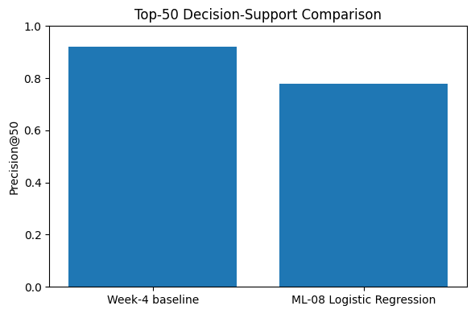

FlyRank ML Internship — Capstone research paper (ML-11)
Predicting Organic-Search Visibility Decline for Content Review Prioritization
A Logistic Regression decline-risk classifier, evaluated against an existing rule-based baseline on the same client-grouped holdout — reported honestly, including the part where the simple rule won.
ML-07 heuristic baseline — Precision@50
92%
46 of the top 50 ranked pages were later confirmed declining.
ML-08 Logistic Regression — Precision@50
78%
39 of the top 50 ranked pages were later confirmed declining.
Difference
−14 pp
The learned model did not outperform the baseline it was measured against.
This paper asks whether historical search-performance and content signals can identify pages likely to see a meaningful organic-search decline, early enough for a content team to prioritize them for review, using a pseudonymized extract of FlyRank's search-performance data covering 30,000 content items across 32 clients. A page is labeled declining when its trailing search impressions fall by more than 20%, and a Logistic Regression classifier trained on 21 historical features is evaluated against an existing rule-based heuristic on the same client-grouped holdout, using Precision@50 as the shared metric. The heuristic baseline reached a Precision@50 of 92%, while the learned model reached 78% — a 14-percentage-point gap in the baseline's favor. The model therefore did not improve on the existing rule under this evaluation, and this paper reports that result directly rather than reframing the comparison around a friendlier metric. What follows is a full account of the data, method, validation, and error analysis behind that result, plus a ranked review playbook intended to support human decision-making, not to replace it.
Introduction & problem statement
A content or SEO team responsible for a large page inventory cannot manually review every page every week. Review capacity is limited, and the practical question is not “which pages will decline” in the abstract — it is which pages should a human look at first, given everything else that also needs attention.
Research question
Can historical search-performance and content signals identify content pages at risk of a meaningful decline in organic-search impressions, so that limited content-review capacity can be prioritized toward them?
The decision this supports
The intended output is a directional risk signal for human review — not an autonomous system. A decline-risk score can be used to prioritize which pages get investigated first: their recent search performance, content relevance, freshness, engagement, and depth. The score does not publish, delete, redirect, rewrite, or otherwise change any page. A human reviewer makes the final call.
The reason this is worth studying carefully — rather than just shipping a model — is that a content team already has a working rule for this decision (the ML-07 baseline described below). A learned model is only useful here if it does the prioritization job better than that rule, on the same evaluation. This paper treats that as an open empirical question, not a foregone conclusion.
Data
The platform release
FlyRank's internship track runs on a pseudonymized warehouse release,
flyrank_pseudonymized_warehouse_release_v20260703, exported July 3, 2026.
Its daily search-performance table spans 2025‑01‑27 through
2026‑06‑30 and covers roughly 79 million rows across approximately 70
pseudonymized clients, hosted as gated Parquet on Hugging Face and queried in place with
DuckDB rather than downloaded.
The modeling extract used for the headline result
The ML-07/ML-08 comparison reported in this paper — the 92% vs. 78% result —
was run on a smaller, already-anonymized extract of that platform:
content_refresh_anonymized.csv, one row per content item, 30,000 rows across
32 pseudonymized clients, with search and engagement metrics aggregated over a trailing
90-day window per item. A feature-preparation step expands this from 44 raw columns to
52, adding log-scaled traffic features, boolean flags, and the target column.
Label definition
The target, is_declining, is 1 when a content item's trend classification
is down: impressions in the most recent 30 days fell by more than 20%
relative to the preceding 30 days. Under this definition, 54.2% of the 30,000 items
(16,262 rows) are labeled declining.
This is a trend comparison over two already-elapsed windows, not a genuine held-out future period. Both the “last 30 days” and the “previous 30 days” are computed from the same export snapshot. That is a meaningfully easier task than forecasting a disjoint future window, and it is a limitation of the headline result — addressed further in Section 5 and revisited under a genuine historical/future split in the ML-09 validation audit below.
Exclusions
The released data is pseudonymized: no client names, domains, URLs, private search queries, credentials, or other identifying fields are present in the extract or used anywhere in this paper. Rows without a keyword-context match or without sufficient historical activity to compute the required aggregates were excluded upstream of the modeling dataset, and content younger than 90 days was excluded so that every row has a complete trailing window.
A genuine future-window audit (ML-09)
A later validation pass (ML-09, described in Section 3 and
Section 5) re-ran the evaluation directly against the full
warehouse release using disjoint calendar windows — a historical window
(2026-04-02 to 2026-05-16) used only for features, and a separate future window
(2026-05-17 to 2026-06-30) used only to construct the label — on 108,517 rows
across 46 clients, grouped by client_hash_id. That audit is the paper's one
genuinely forward-looking evaluation, and its result is reported alongside the headline
number rather than in place of it.
Methodology
Assumptions
Historical signals may carry a directional indication of future visibility decline, but they do not establish causality. Model coefficients are interpreted as associations the fitted classifier relies on, not as evidence that changing a feature would change an outcome. The intended use is prioritizing limited review capacity, not making an autonomous content decision.
Features
The Logistic Regression model uses 21 numeric features drawn from the 52-column prepared
extract, spanning four families: historical search performance (impressions, clicks,
average position, days with impressions), content and freshness (word count, character
count, content age, days since last update), engagement (sessions, scroll rate), and
query breadth. Fields that directly encode the label — trend_direction
and trend_pct — and the most-recent-30-day impression figures used to
build that label are excluded from the feature set.
Baseline
The point of comparison is the existing ML-07 heuristic, not an arbitrary or
straw-man benchmark. It scores each page from a weighted combination of three signals
computed before the outcome window: 50% historical visibility (impressions), 30% query
breadth (distinct visible queries), and 20% CTR opportunity (low click-through despite
visibility). It outputs a single reason code, VISIBILITY_REVIEW, and a
single recommended action, REVIEW_AND_REFRESH. The question this paper asks
is whether a learned model improves on that rule for the same top-50 prioritization job
— not whether a model can be built at all.
Validation design
The model is evaluated with a client-grouped holdout using GroupShuffleSplit,
grouped by client identifier so that every content item from a given client lands
entirely in training or entirely in test, never split across both. This matters because
pages from the same client tend to share client-specific search patterns; a random
row-level split would let those patterns leak across the split and make the evaluation
optimistic. Roughly 80% of clients (23,837 rows) were used for training and 20%
(6,163 rows) for testing.
Leakage checks
- All 21 model features are computed from the historical window, before the label's outcome window.
- The most-recent-30-day impression figures used to construct the label are used only for that purpose and are not included in the feature matrix.
- The client identifier is used only for grouping the train/test split — it is never passed to the model as a predictive feature.
- In the separate ML-09 audit, the feature set was re-checked directly against the fields used to build the future-window label, and no direct overlap was found.
Results
Model vs. baseline
| Approach | Precision@50 |
|---|---|
| ML-07 heuristic baseline | 92% |
| ML-08 Logistic Regression | 78% |

work/figures/ml08_precision_at_50_comparison.png).
Interpretation. The learned Logistic Regression model did not outperform the existing heuristic baseline on the reported evaluation. Under this metric and split, the simple rule ranked more genuinely declining pages into its top 50 than the model did.
Error profile
On the 6,163-row held-out test set, the model's predictions broke down as follows. No audited ROC-AUC figure is available for this run, so none is reported here.
| Outcome | Count |
|---|---|
| Correct predictions | 3,525 |
| False positives | 1,508 |
| False negatives | 1,130 |
Model signal summary
The ten largest Logistic Regression coefficients by magnitude, from the fitted model:
| Feature | Coefficient |
|---|---|
days_with_impressions | 0.7208 |
word_count | 0.5799 |
days_with_sessions | −0.4996 |
char_count | −0.3645 |
age_tier_order | −0.1671 |
days_since_last_update | 0.1571 |
content_age_days | −0.1551 |
impressions_prev_30d | 0.1514 |
avg_position | −0.1396 |
scroll_rate | 0.1279 |
These describe associations within the fitted classifier, not causal effects. Notably,
days_since_last_update and content_age_days carry opposite
signs, so the model does not support a simple story like “older pages always
decline” or “refreshing always helps.”
A second, stricter measurement (ML-09)
Under the genuine historical/future split described in Section 2 — a different, larger extract with a disjoint future window and a documented five-feature set — the audited Precision@50 was 84%, six percentage points above the original 78%. This is not directly comparable to the headline 92%/78% figures, since it uses different data and features; it is reported as an additional, stricter data point rather than a replacement result. See Section 5.
Limitations & honest framing
- No causal inference. Coefficients and feature relationships are associations learned by the classifier, not evidence that changing a feature would change an outcome.
- The learned model underperformed the baseline. On the reported evaluation, added model complexity did not translate into a better top-50 ranking than the existing rule.
- The headline label is a trend comparison, not a forecast. As noted in Section 2, the 92%/78% result uses a label built from two already-elapsed 30-day windows at a single export snapshot, not a disjoint future period. The one genuinely forward-looking measurement in this paper is the separate ML-09 audit, which used different data and features and is not directly comparable.
- A single client-grouped holdout is not proof of generalization. It reduces one specific form of leakage; it does not establish how either approach would perform on new clients, later time periods, or a changed search environment.
- The dedicated leakage-check assignment (ML-05) was not completed as a
standalone artifact in this repository's
work/notebooks/directory. Leakage discipline for the headline result is instead documented inline in ML-08 and independently re-audited in ML-09, as described in Section 3. - The decline threshold (>20%) is an analytical choice, not a natural constant. A different threshold would relabel some items and could change both the baseline's and the model's measured precision.
- Public-safe data restrictions. The paper works from a pseudonymized extract with client names, domains, URLs, and queries removed; findings should be read as a research and decision-support exercise over that pseudonymized data, not a disclosure of any individual client's performance.
- No autonomous actions. Nothing in this paper's output triggers a publish, delete, redirect, rewrite, or metadata change on its own.
Supported by this evaluation
- A directional decline-risk classifier was trained and evaluated.
- Logistic Regression achieved 78% Precision@50 on the reported client-grouped holdout.
- The ML-07 heuristic baseline achieved 92% Precision@50 on the same holdout.
- The baseline outperformed the learned model by 14 percentage points on this metric.
- Under a separate, genuinely future-windowed audit with different data, the model measured 84% Precision@50.
Not supported — not claimed
- That any feature causes visibility decline.
- That the model prevents traffic loss.
- That either approach generalizes to unseen clients or future periods.
- That the model is superior to the existing baseline.
- That any output here should trigger an automated SEO action.
Ranked recommendations
Whichever score a team decides to trust, the output feeds the same ranked review playbook. A rank identifies what to investigate, never what to automatically change.
| Rank | Signal / condition | Recommended action | Priority | Reason code |
|---|---|---|---|---|
| 1 | High decline risk with supporting historical evidence | Investigate for potential visibility decline; determine whether a refresh is warranted | High | HIGH_DECLINE_RISK |
| 2 | Strong freshness / update signal | Review whether the content needs updating | High | FRESHNESS_SIGNAL |
| 3 | Engagement or search-performance signal | Review engagement and historical search-performance indicators | Medium | ENGAGEMENT_SIGNAL |
| 4 | Content-depth signal | Review depth, relevance, and whether the page serves its search intent | Medium | CONTENT_DEPTH_SIGNAL |
| 5 | Model probability near 0.50 | Escalate for human review; the model is uncertain | Low | UNCERTAIN_MODEL_SCORE |
| 6 | Insufficient supporting evidence | Continue monitoring rather than take immediate action | Low | INSUFFICIENT_EVIDENCE |
Recommendations do not automatically trigger publishing, deletion, redirects, rewriting, title or metadata changes, or any other high-impact SEO decision. Every rank is an instruction to look, not to act.
Decay / refresh note
days_since_last_update and content_age_days carried opposite
signs in the fitted model (see Section 4), so the playbook does
not treat “this page is old” as a standalone reason to refresh it. Freshness
is a hypothesis to check against the actual page, not a conclusion.
Reproducibility
Every figure and table above comes from the notebooks below, all committed in the public repository behind this page.
- Repository root — MuhammadShayan8401/flyrank-ml-internship github.com/MuhammadShayan8401/flyrank-ml-internship
- Capstone notebook (ML-11) — mirrors this page section by section work/notebooks/capstone.ipynb
- ML-07 — baseline rule and ranked queue work/notebooks/w04_baseline_score.ipynb
- ML-08 — Logistic Regression model, training and comparison work/notebooks/w05_model.ipynb
- ML-09 — validation and claim audit (the future-window re-run) work/notebooks/w06_validation_audit.ipynb
- ML-10 — ranked action playbook and exported figure work/notebooks/w07_action_playbook.ipynb
- Precision@50 comparison chart work/figures/ml08_precision_at_50_comparison.png
- Ranked validation review queue — regenerated by cell 16 of ML-10 work/outputs/ranked_content_action_queue.csv (gitignored by design; regenerate by running ML-10 locally)
- Evaluation receipts (JSON) work/metrics/ml10_playbook_receipts.json
- Data dictionary — all columns, meanings, and known gotchas docs/data-dictionary.md
{kind=link}
Notebooks were run in Google Colab against the anonymized starter extract
(data/raw/content_refresh_anonymized.csv) and, for the ML-09 audit, against
the gated FlyRank/internship-warehouse release on Hugging Face via DuckDB.
Exact random seeds and library versions for these runs are not recorded in the committed
notebooks and are not reported here rather than reconstructed after the fact.
Acknowledgments & data credit
This research was completed as part of the FlyRank ML Internship, Applied Search Intelligence track.
Built on the FlyRank ML Internship dataset.
Thanks to the FlyRank ML Internship team for the pseudonymized data release, the reference pipeline this capstone builds on, and the skills library that shaped how its claims are written.